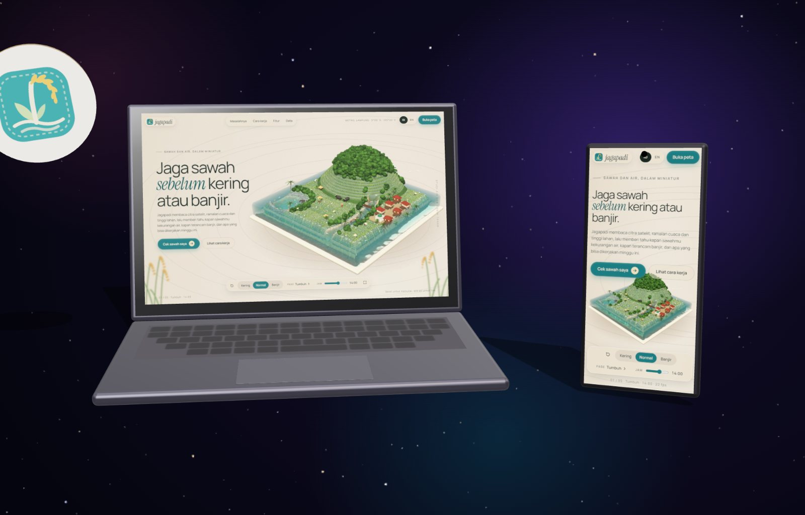
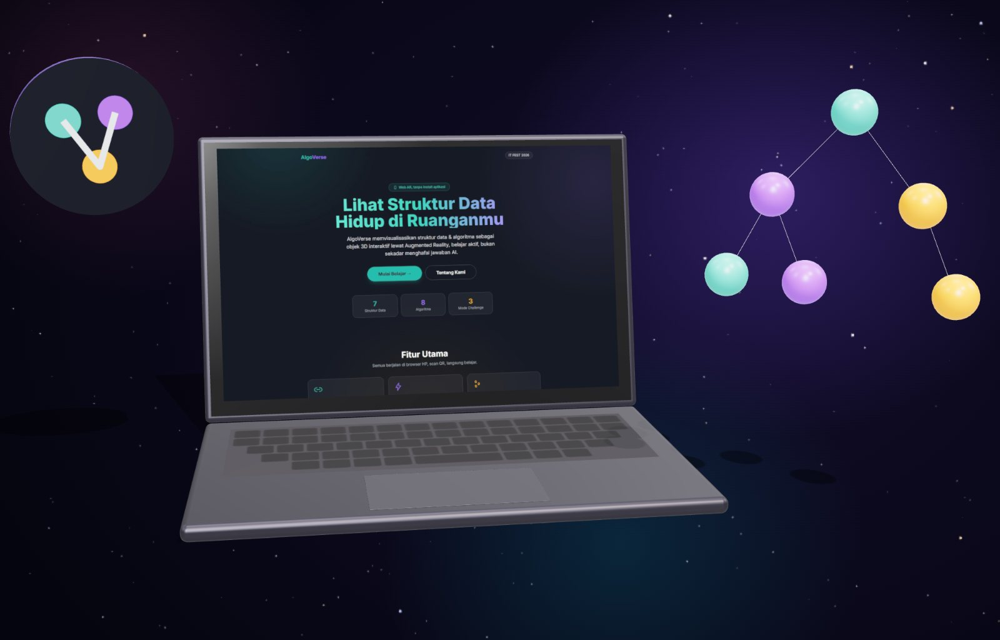
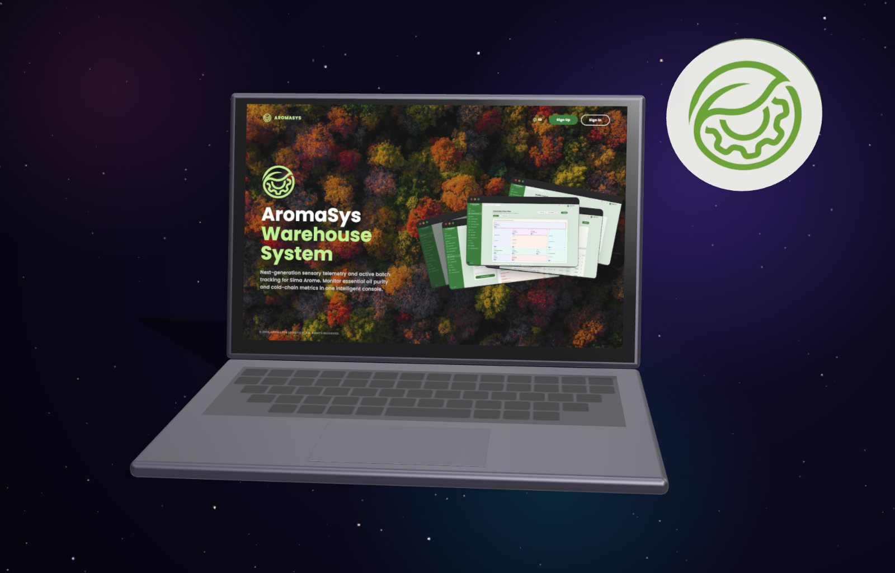
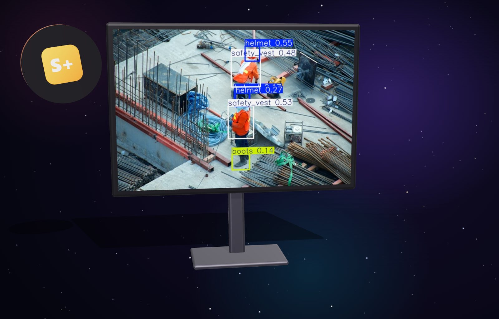
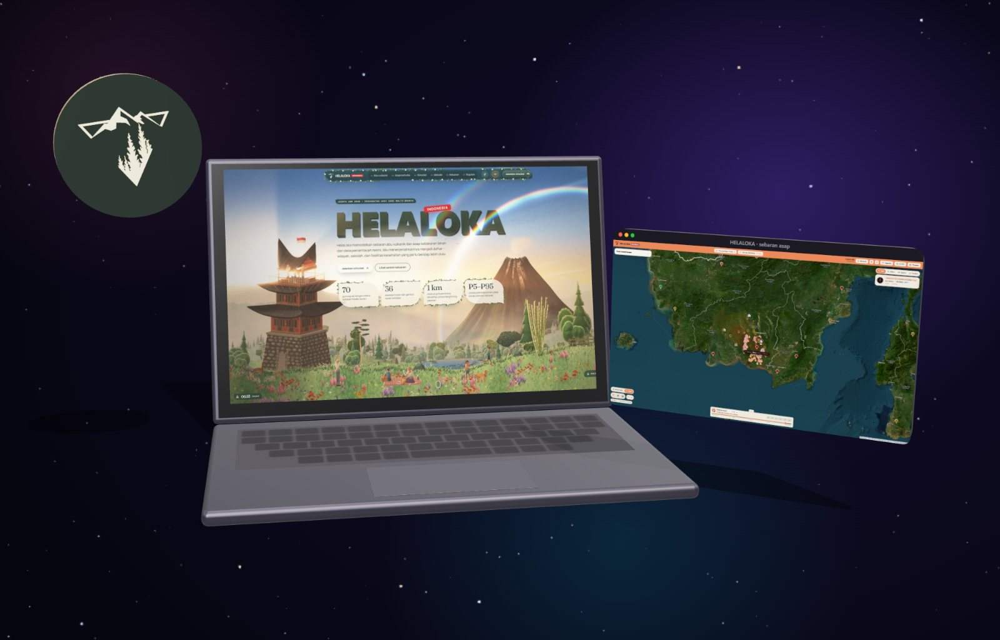
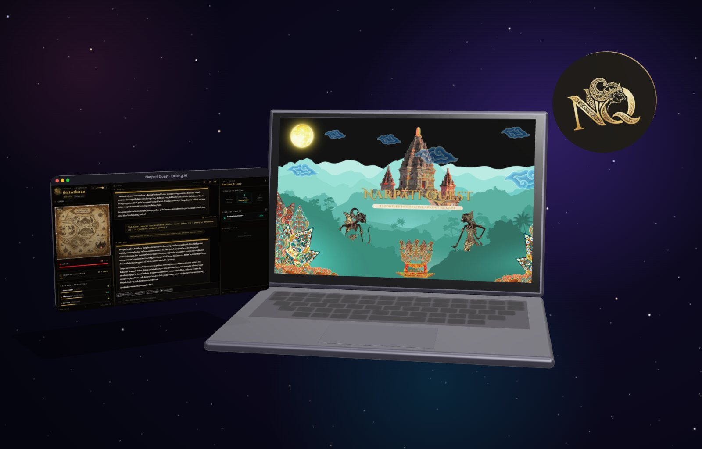
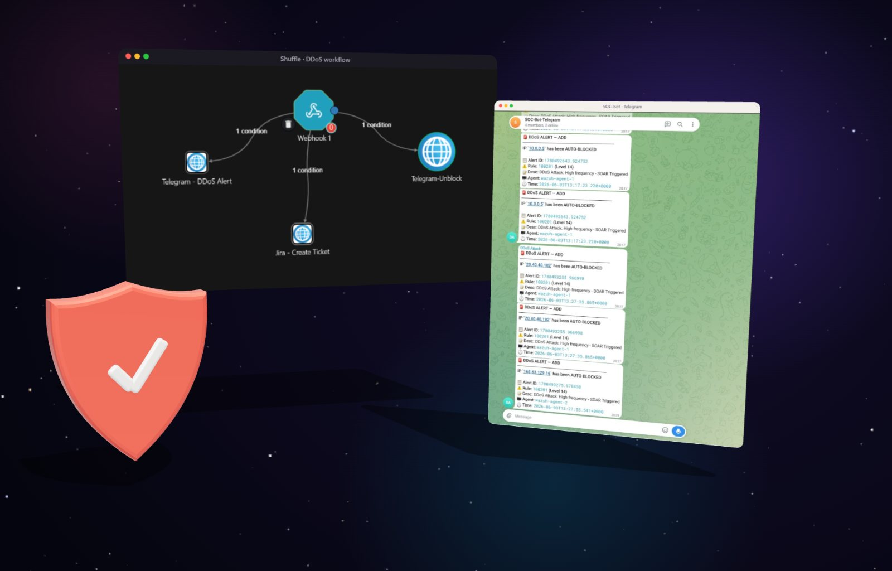
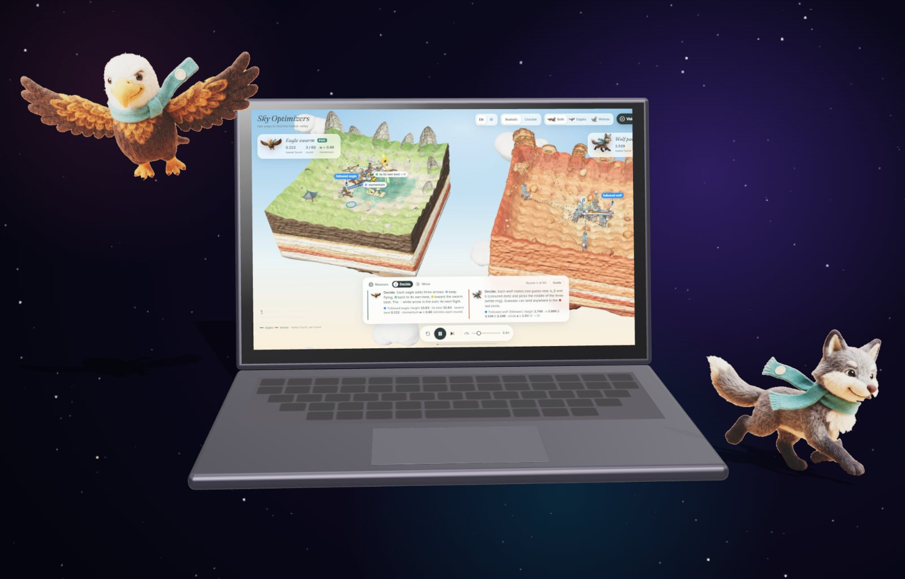

01 / SEE
Perception
YOLOv8 geofencing, PPE checks, Sentinel radar and optical imagery, WebAR.
// hello world, I'm Arya
IT student at ITS Surabaya, building systems that see, defend and decide.
THE ISLAND
A camera that sees, a dome that defends, racks that decide, and rice terraces for the farmers it all serves.
8 KM ABOVE THE SEA · SCROLL TO DIVE
01 · ABOUT ME
I study Information Technology at Institut Teknologi Sepuluh Nopember (ITS) in Surabaya, Indonesia. Most of my work is for people under pressure: farmers watching for drought, towns in the path of volcanic ash, refinery crews near red zones, students learning algorithms, and SOC teams facing a flood of packets.
I like closing the loop: systems that see what is happening, defend what matters, and help people decide what to do next.
SPRING ISLAND
Every build starts as a small question: will this field dry out, will the smoke reach town, can a student see a binary tree?
02 · WHAT I WORK ON
01 / SEE
YOLOv8 geofencing, PPE checks, Sentinel radar and optical imagery, WebAR.
02 / DEFEND
Wazuh decoders, SOAR playbooks, digital forensics, LLM agent guardrails.
03 / DECIDE
gRPC meshes, FastAPI services, cloud scheduling heuristics.
15.7M
SYN-flood packets absorbed and blocked
SOC-SOAR
< 4 s
from detection to block, no human in the loop
SOC-SOAR
< 50 ms
per frame to check red-zone breaches
SIEWS+
~15%
lower makespan than FCFS and Round Robin
PEFT scheduler
2,812
papers screened for the world-model review
SLR
SUMMER ISLAND
From Cyberhack and Hulu Migas to JOINTS UGM and IT Fest UB: long nights, short deadlines, real demos.
03 · FEATURED WORK
01 / 08








AUTUMN ISLAND
Two silver medals and two finals, earned by shipping things that work in front of judges.
04 · AWARDS
AR visualisation of data structures and algorithms in the phone browser.
IT FEST 2026 · UNIVERSITAS BRAWIJAYA
2ndWarehouse intelligence: digital twin, vision QC and an AI operations copilot.
CYBERHACK HACKATHON · XTREMAX × UCS ITS
FinalYOLOv8 personnel, PPE and hazard detection with OCR and face verification for upstream oil and gas.
HACKATHON AI/ML HULU MIGAS 2026 · SKK MIGAS × IOG 4.0
FinalPCA, Kruskal-Wallis and K-Means/DBSCAN on world air-quality data.
IMILKOM IT COMPETITION · UNIVERSITAS SUMATERA UTARA
ALSO COMPETED UM Metro Hackathon 2026 · JOINTS UGM 2026 · ForgeHacks Online 2026
05 · EXPERIENCE & LEADERSHIP
HAMILKU.ID
AI backend lead for the patient AI module: API architecture, LLM integration, and predictive models for early detection of pregnancy complications.
ARA 8.0 · ITS
Leads the developers behind registration, dashboards, the voucher system and the CTFd UI, and keeps sub-division requests on schedule.
IBL 2K26 · ITS
RESTful API in Node.js/Express with JWT auth and real-time validation, tuned for registration traffic spikes.
ADMIN LAB KCKS · IT ITS
Automatic classification of thesis PDFs into AI, IoT, Cyber Security and Cloud; runs the lab's 3D printing service.
DIRPAIP · ITS
Technical support for ITS short courses and learning platforms.
DEPT. OF INFORMATION TECHNOLOGY · ITS
Data Structures & OOP; teaching assistant for Statistics and Calculus 1 & 2.
WINTER ISLAND
The slow months: reading 2,812 papers, writing about LLM agent safety, and learning with other teams.
06 · TEAMS & ORGANISATIONS
07 · RESEARCH & MORE
08 · CONTACT
Open to research collaboration, internships and hackathon teams.
arya445refman@gmail.com